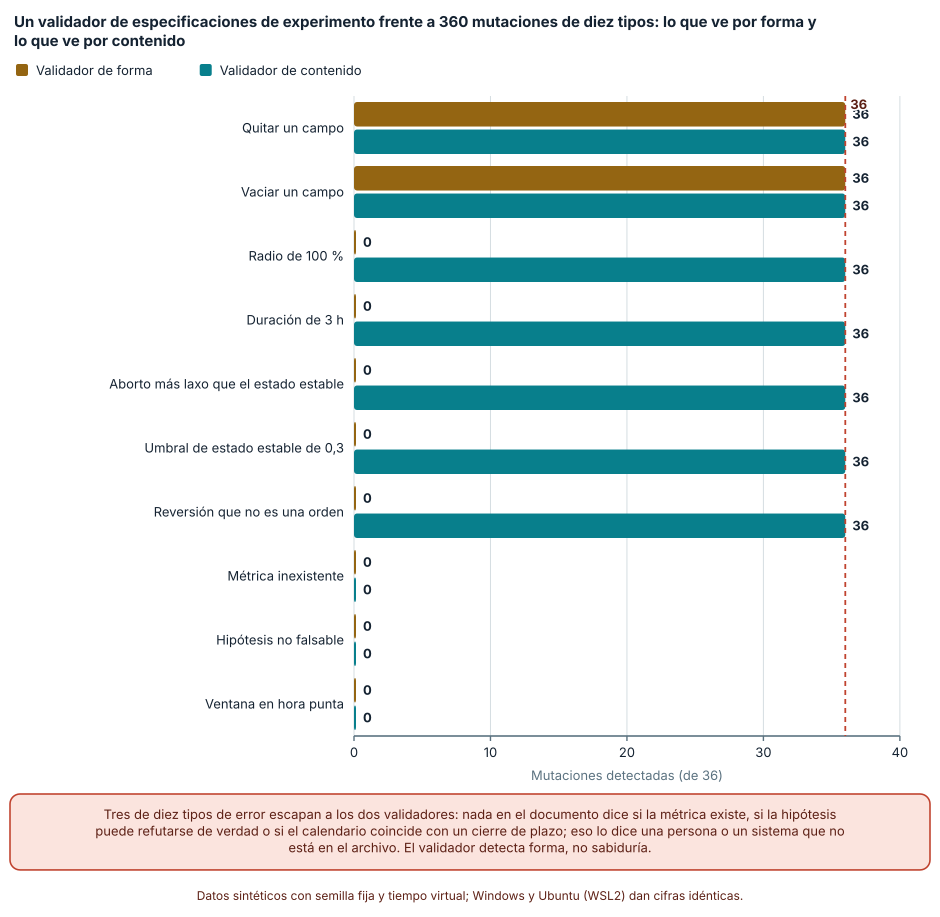
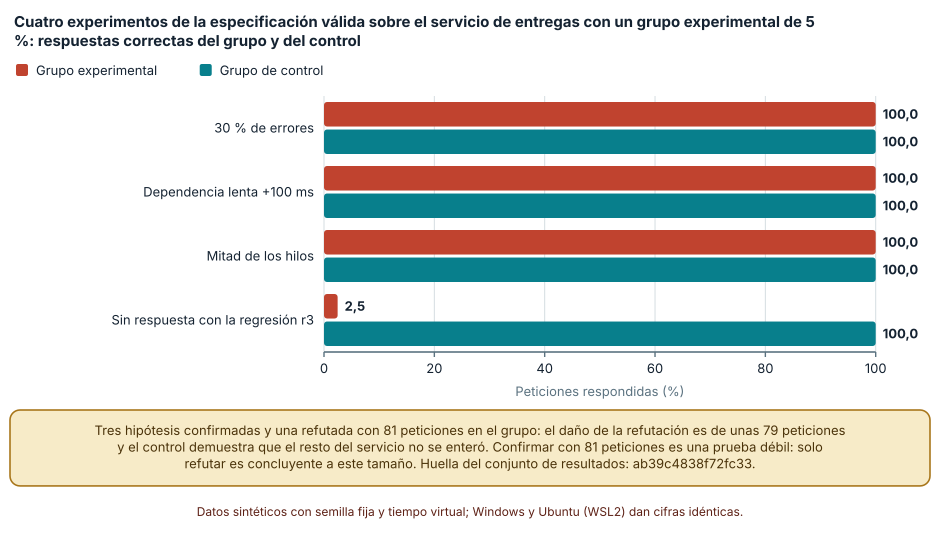
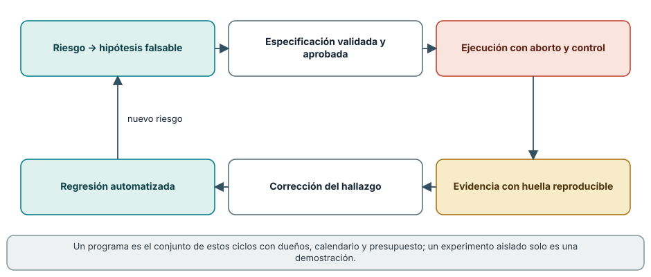

← SE-515 — Taller: ejecutar un experimento de caos acotado con criterio de aborto · ↑ Parte 42 · 📚 Índice completo · 🌐 Portal · SE-517 — Mantenimiento correctivo, adaptativo y perfectivo →
Punto profesional y fundamento pedagógico
Punto profesional. La clase existe para que reúnas la Parte 42 en un programa de experimentos con evidencia: un catálogo de fallas, especificaciones de experimento validadas, resultados con control y huella reproducible, y una declaración de lo que nada de eso demuestra. El taller de SE-515 ejecuta un experimento acotado; el proyecto exige reunir todos los experimentos y entregarlos de forma que otra persona lo pueda repetir, refutar y mantener.
Por qué aparece aquí. Cierra la Parte 42: SE-505 y SE-506 fijaron el estado estable y el radio y el aborto, SE-507 y SE-508 las fallas de red, de dependencias y de recursos, SE-509 las herramientas, SE-510 los datos y el aprendizaje automático, SE-511 y SE-512 la práctica con personas y con el pipeline, SE-513 la gobernanza, SE-514 el aprendizaje y la evidencia y SE-515 el experimento acotado. Sigue el patrón del proyecto de la Parte 41 (SE-504): un paquete reproducible con un validador y una declaración de límites. El caso conductor es la API de entregas.
Error conceptual que debe corregir. Creer que un programa de caos es una colección de experimentos, o que un validador que acepta la especificación garantiza que el experimento es bueno. El programa es un sistema con dueños, calendario, presupuesto y registro, y el validador solo comprueba forma y contenido, no si la métrica existe ni si la hipótesis puede refutarse de verdad.
Secuencia de aprendizaje. Antes de ver los resultados predices cuántas de 360 especificaciones defectuosas detecta un validador de forma, cuántas uno de contenido y qué tipos escapan a ambos. Después ejecutas el taller, entregas el proyecto y contrastas con la figura de resultados. ICAP distingue participación de construcción de conocimiento; How People Learn II respalda diseñar la práctica con contextos reales y retroalimentación.
Evidencia de aprendizaje. El paquete caos-programa/ descrito abajo, con catálogo, especificaciones, validador, resultados con huella e informe de límites, y programa-log.md con la predicción, las tres figuras reproducidas y una lista de lo que ningún validador del paquete ve.
Límite de la conclusión. El servicio, las especificaciones, las 360 mutaciones, los cuatro experimentos y la huella son sintéticos y de tiempo virtual. No se ejecutó ningún experimento sobre un sistema real; el validador se afinó con las mismas mutaciones que lo evalúan y su porcentaje muestra una frontera, no una tasa de detección.
Trazabilidad fuente → afirmación
| Fuente primaria u oficial | Afirmación que respalda | Lo que no prueba |
|---|---|---|
| Principles of Chaos Engineering | Resume el método en cuatro pasos (estado estable, hipótesis, variables reales y búsqueda de una diferencia entre control y experimento) y pide automatizar y ejecutar de forma continua. | No describe un formato de especificación. |
| Netflix: «ChAP» (2017) | Muestra un programa automatizado: control y experimento, un interruptor al exceder el presupuesto de error y ejecución continua integrada con el sistema de entrega. | No es una plantilla aplicable sin su plataforma. |
| AWS FIS: plantillas de experimento | Una plantilla de experimento reúne acciones, objetivos y condiciones de parada como el plano de un experimento. | No evalúa la calidad de la plantilla. |
| Basiri et al., «Chaos Engineering» (IEEE Software, 2016) | Describe el enfoque de experimentación y sus principios para verificar la confiabilidad de sistemas distribuidos. | No valida un programa concreto. |
| Google SRE: Testing for Reliability | Advierte que las pruebas estadísticas no son necesariamente repetibles y que repetirlas no prueba la corrección. | No dice cómo hacer una huella. |
Antes de empezar
Recupera lo aprendido en las once clases anteriores. La pregunta activa es: ¿qué paquete mínimo permite a alguien que no estuvo aquí entender qué experimentos hacemos con la API de entregas, repetir cualquiera de ellos, comprobar que sus piezas encajan y saber qué todavía no hemos probado ni queremos probar?
Prerrequisitos
- Haber completado
SE-505aSE-515o poder explicar cada artefacto que dejaron (matriz de declarado y demostrado, hipótesis con banda, especificación, catálogo, herramientas, plan de práctica, etapa de pipeline, experimentos de datos, plan de producción, criterios de seguridad y política de límites). - Haber ejecutado al menos una vez los experimentos de la Parte 42 desde un checkout limpio.
- Python 3.11 o posterior; los experimentos usan solo la biblioteca estándar (
hashlib,json).
Problema auténtico
El equipo de la API de entregas ha acumulado en un año once documentos, tres planillas, dos paneles y cuatro scripts de experimentos. Cuando alguien nuevo pregunta «¿qué sabemos de la resiliencia de la API?», la respuesta depende de a quién se pregunte. Un experimento se repite y da otro resultado porque nadie guardó la semilla; una especificación aprobada tiene un aborto con un umbral más laxo que el de su hipótesis; otra usa una métrica que nadie emite desde hace un trimestre. Cada pieza es razonable y el conjunto no se puede auditar. La clase construye el paquete que lo haría auditable y mide qué errores de ese paquete detecta un validador y cuáles no.
Objetivos observables
Al terminar podrás:
- reunir los artefactos de la parte en un paquete con catálogo, especificaciones, resultados, huella y límites;
- escribir un validador de especificaciones de experimento y medir qué detecta frente a 360 mutaciones de diez tipos;
- calcular una huella reproducible de los resultados y comprobar que dos ejecuciones la repiten;
- ejecutar el ciclo completo con control y experimento sobre una configuración, confirmando y refutando hipótesis con una muestra pequeña;
- escribir el informe de límites que dice qué se hizo, qué no y qué clases de error ningún validador ve.
Mapa conceptual
Ver la notación fuente del diagrama
flowchart LR
A[Catálogo de fallas por mecanismo] --> B[Especificación del experimento]
B --> C[Validador: forma y contenido]
C -->|rojo| B
C -->|verde| D[Ejecución con control y aborto]
D --> E[Resultados y huella]
E --> F[Informe de límites]
F --> G[Revisión por otra persona]
G -->|hallazgo| H[Corrección y regresión]
H --> BEl mapa es un ciclo: cada hallazgo vuelve como corrección y como una prueba de regresión. El validador está antes de la ejecución y el informe de límites después de la huella; ningún paso sustituye al siguiente.
Temas y por qué importan
| Tema | Por qué cambia una decisión profesional | Evidencia mínima |
|---|---|---|
| Especificación validable | Lo que no está escrito no se puede revisar ni repetir. | Predicción, traza causal y contraejemplo de Especificación validable en programa-log.md |
| Validador y mutaciones | Un validador solo vale lo que detecta, y se mide con errores conocidos. | Predicción, traza causal y contraejemplo de Validador y mutaciones en programa-log.md |
| Resultados con control y huella | Un resultado reproducible se comprueba con un resumen criptográfico. | Predicción, traza causal y contraejemplo de Resultados con control y huella en programa-log.md |
| Confirmar y refutar con muestra pequeña | Con pocas peticiones solo la refutación es concluyente. | Predicción, traza causal y contraejemplo de Confirmar y refutar con muestra pequeña en programa-log.md |
| Informe de límites | Decir qué no se probó es parte de la evidencia. | Predicción, traza causal y contraejemplo de Informe de límites en programa-log.md |
Conceptos y decisiones
1. El paquete
El paquete caos-programa/ tiene seis partes que corresponden a las clases de la parte:
caos-programa/
├── catalogo.yaml # fallas por mecanismo, con evento real y señal (SE-508)
├── especificaciones/ # una por experimento, doce campos (SE-506)
│ └── CH-2026-014.yaml
├── politica.md # presupuesto, selección, permisos y calendario (SE-513)
├── remediacion.md # hallazgo → acción verificable → responsable → prueba de regresión (SE-514)
├── validador.py # forma y contenido de las especificaciones
├── resultados/ # resultados con semilla, grupo y control (SE-505, SE-515)
│ └── huella.txt
└── limites.md # qué se hizo, qué no y qué no ve ningún validadorLa especificación es el centro. Sus doce campos (identificador, hipótesis, estado estable, radio, aborto, reversión, responsable, ventana, observabilidad, aprobación, comunicación y evidencia) responden las preguntas que un incidente haría en voz alta, y el plano de un experimento de AWS FIS (acciones, objetivos y condiciones de parada) es una versión reducida de la misma idea. Un ejemplo válido, el que usa el validador de esta clase:
spec = {"id": "CH-2026-014", "hipótesis": "con 20 % de errores en almacenamiento, la API mantiene 99 % de entregas aceptadas",
"estado_estable": {"métrica": "entregas_aceptadas_ratio", "umbral": 0.99, "ventana_s": 60},
"radio": {"fracción": 0.05, "duración_s": 600},
"aborto": [{"métrica": "entregas_aceptadas_ratio_grupo", "menor_que": 0.9, "ventana_s": 10}],
"reversión": "chaosctl stop CH-2026-014", "responsable": "guardia-api", "ventana": "mar-jue 10:00-16:00",
"observabilidad": "panel-api-entregas", "aprobación": "lider-api", "comunicación": "#api-avisos", "evidencia": "evidence/CH-2026-014.json"}2. El validador y lo que detecta
Dos validadores de dificultad creciente. El de forma comprueba que los doce campos existen y no están vacíos. El de contenido añade reglas sobre los valores: radio entre 0 y 25 %, duración máxima de 30 minutos, aborto con umbral, un aborto más estricto que el estado estable (si no, se dispara antes de que la hipótesis pueda refutarse), un estado estable con umbral mayor de 0,5 y una reversión que sea una orden ejecutable. Se generan 360 especificaciones defectuosas a partir de la válida con diez tipos de mutación (36 de cada uno) y se cuenta cuántas detecta cada validador.
def _semantic_check(spec):
errs = _form_check(spec)
if not 0 < spec["radio"]["fracción"] <= 0.25: errs.append("radio fuera de (0, 25 %]")
if spec["aborto"][0]["menor_que"] >= spec["estado_estable"]["umbral"]: errs.append("el aborto se dispara antes de salir del estado estable")
return errs
Cómo leer la figura. Cada fila es un tipo de mutación y las barras, las 36 especificaciones defectuosas de ese tipo que detecta cada validador; la línea es el total. El de forma detecta las 72 mutaciones de quitar o vaciar un campo y ninguna de las otras 288; el de contenido detecta 252 de 360, es decir, añade radio de 100 %, duración de tres horas, aborto más laxo que el estado estable, umbral de 0,3 y reversión que no es una orden. Ninguno detecta una métrica inexistente, una hipótesis no falsable («el sistema es resiliente») ni una ventana en hora punta: 108 de 360, un 30 %. La especificación válida la aceptan los dos. Dónde deja de valer: las mutaciones se diseñaron conociendo las reglas, así que 252 de 360 es una frontera de lo que el validador sabe buscar y no una tasa de detección de errores reales; los errores que nadie imaginó no están en la muestra.
Los tres tipos que escapan comparten una propiedad: para detectarlos hace falta información que no está en el documento. Que la métrica exista exige consultar el sistema de observabilidad; que la hipótesis sea falsable exige juicio; que la ventana coincida con un cierre de plazo exige el calendario de la institución. Un validador de contenido más ambicioso puede consultar el catálogo de métricas y el calendario, y aun así queda el juicio. Lo útil es saber qué clases de error nadie ve y asignarlas a una persona en la revisión.
3. Resultados con control y huella
La ejecución usa la configuración E de SE-507 con una fracción de 5 % de tráfico para el grupo experimental. Se ejecutan cuatro experimentos de 60 s a 90 peticiones por segundo (la falla ocupa los segundos 10 a 30): 30 % de errores, lentitud de 100 ms en la dependencia, mitad de los hilos y, como cuarto, la falta de respuesta aplicada a la configuración con la regresión R3 de SE-512 (sin cortacircuitos ni alternativa). Para cada uno se mide la proporción de respuestas del grupo experimental y del de control durante la falla.
r = simulate(1616, REGRESSIONS["R3 se quita el cortacircuitos"], [fault], duration_s=60.0, rate=90.0, treat_fraction=0.05)
grupo, control = summarize(r, 12, 30, treated_only=True), summarize(r, 12, 30, treated_only=False)
huella = hashlib.sha256(json.dumps(resultados, sort_keys=True, ensure_ascii=False).encode("utf-8")).hexdigest()[:16]
Cómo leer la figura. Cada par de barras es un experimento: la proporción de peticiones respondidas del grupo experimental (5 % del tráfico, 81 peticiones) y del de control (1 560). Con la configuración sana, los tres primeros dan 100 % y 100 %: las hipótesis no se refutan. Con la regresión R3 frente a la falta de respuesta, el grupo cae a 2,5 % y el control sigue en 100 %: la hipótesis queda refutada y el control demuestra que el resto del servicio no se enteró. Dónde deja de valer: con 81 peticiones en el grupo, confirmar es una prueba débil: con una diferencia real de 1 punto no se vería, y solo una refutación de este tamaño es concluyente (SE-505). La huella del conjunto de resultados es ab39c4838f72fc33.
La huella (los primeros 16 caracteres del SHA-256 del resultado serializado con claves ordenadas y codificación explícita) permite comprobar que dos ejecuciones dieron lo mismo sin comparar a ojo. Es idéntica en cualquier sistema con la misma versión de Python porque el tiempo es virtual y el generador tiene semilla fija; si el experimento toca el reloj, la red o el disco, la huella difiere por diseño, y la tarea es declarar esa diferencia (SE-504). Para el mismo conjunto de resultados, la huella cambia si cambia cualquier cifra del resultado, de modo que sirve de sello de la evidencia.
4. El ciclo completo, de la declaración a la regresión
El ciclo es una sola secuencia, con el sistema de la clase y sin herramientas externas, que reúne lo que las clases anteriores hicieron por separado.
- Declarado: abre la configuración E de
SE-507y escribe lo que declara (esperas, reintentos, cortacircuitos, alternativa) y la falla que pondría a prueba cada mecanismo. - Estado estable: mide el ruido del indicador con el sistema sano y fija la banda de tres desviaciones para una ventana de 60 s (
SE-505). - Especificación: escribe una especificación de doce campos para «30 % de errores en la dependencia durante 10 minutos con 5 % del tráfico» y pásala por el validador hasta que dé verde (
SE-506). - Ejecución: corre el experimento con grupo de control, compara y decide si la hipótesis queda refutada (
SE-515). - Regresión: aplica la regresión R3 y repite; el experimento debe refutarla (
SE-512). - Límites: escribe qué no verificó el experimento (daño a un solo curso, defectos humanos, umbrales de capacidad) (
SE-513).
Cada paso tiene una salida que se guarda; si un paso no produce una salida comprobable, no cuenta. El ciclo dura de dos a tres horas y es una práctica de forma, no una evaluación del equipo.
5. El proyecto: el programa
El proyecto entrega el paquete caos-programa/ con seis piezas concretas: un catálogo de al menos doce fallas por mecanismo con evento real, señal y puntaje; tres especificaciones válidas para experimentos de distinto tipo (un servicio, un dato y un control de seguridad); la política de presupuesto, selección, permisos y calendario; el validador con su evaluación sobre mutaciones propias (al menos 60, de cinco tipos) y la lista de lo que no ve; los resultados de los tres experimentos con huella, repetidos en dos sistemas cuando sea posible; un plan de remediación (remediacion.md) que convierte cada hallazgo en una acción verificable con responsable, fecha y prueba de regresión (SE-514). Y un limites.md que diga qué se hizo, qué no, qué se evaluó con los mismos casos con que se afinó y qué clases de error ningún validador del paquete detecta. El paquete no es el final: se revisa cada trimestre con las falsas alarmas, los hallazgos y los experimentos que cambiaron de estado.

Cómo leer la figura. Cada caja es un paso del programa y las flechas el orden en que se recorren; la flecha de regreso es el riesgo nuevo que deja cada vuelta. La ejecución con aborto y control produce la evidencia con huella, y la corrección vuelve como regresión automatizada. Dónde deja de valer: es un ciclo ideal de seis pasos; un equipo real lo recorre con pausas, con experimentos en paralelo y con pasos que se saltan por costo, y el valor del dibujo es mostrar qué pieza alimenta a cuál, no el ritmo.
Definiciones de trabajo
- programa de experimentos: conjunto de experimentos con dueños, calendario, presupuesto, registro y revisión periódica.
- especificación del experimento: documento versionado con hipótesis, estado estable, radio, aborto, reversión, responsable, ventana, observabilidad, aprobación, comunicación y evidencia.
- validador de especificaciones: programa que comprueba la forma y el contenido de una especificación antes de ejecutarla.
- mutación: cambio deliberado de un defecto en una especificación válida para medir qué detecta el validador.
- huella: resumen criptográfico del resultado serializado de forma determinista.
- informe de límites: apartado que declara lo que se hizo, lo que no y lo que ningún validador detecta.
Las definiciones son operativas para el cliente de la API de entregas. No convierten términos con una historia más amplia en sinónimos y deben contrastarse con las fuentes enlazadas.
Ejemplo mínimo
El fragmento calcula la huella de un resultado serializado y comprueba que cambia al cambiar una cifra. Antes de ejecutarlo, predice si dos ejecuciones iguales dan la misma huella.
import hashlib, json
def huella(resultado: dict) -> str:
texto = json.dumps(resultado, sort_keys=True, ensure_ascii=False)
return hashlib.sha256(texto.encode("utf-8")).hexdigest()[:16]
a = {"grupo": 1.0, "control": 1.0}
print(huella(a) == huella(dict(a)), huella(a) == huella({"grupo": 0.99, "control": 1.0}))Imprime True False. La misma estructura da la misma huella y una cifra distinta, otra. Registra versión de Python, comando y salida; luego quita sort_keys=True y decide si la huella deja de ser estable al cambiar el orden de las claves.
Ejemplo profesional
Supón, como caso hipotético y no como medición, que el equipo entrega su paquete y lo revisa otra persona del equipo vecino. Encuentra que una especificación usa una métrica que se emite con otro nombre, que una ventana cae en la semana de evaluaciones de una universidad cliente y que la política no dice quién activa el interruptor general un domingo. Ninguna de las tres la ve el validador, y las tres entran en limites.md como clases de error de revisión humana. El equipo corrige las tres, añade una mutación para cada tipo a su evaluación, repite los experimentos y compara la huella con la anterior: cambia solo en el experimento de la métrica corregida. Lo registra como la primera revisión cruzada del programa.
Práctica guiada
- Predice, por escrito, cuántas de las 360 mutaciones detecta cada validador y qué tipos escapan.
- Ejecuta
python scripts/experiments_part42_b.py e516y compara; anota la mayor diferencia con tu predicción. - Añade un tipo de mutación nuevo (por ejemplo, un responsable que no existe) y decide si cada validador lo detectaría.
- Cambia la fracción del grupo de 5 % a 20 % y observa cuántas peticiones tiene el grupo y si cambia la huella.
- Ejecuta el ciclo completo con una configuración de tu servicio y guarda la salida de cada paso.
- Entrega el paquete y pide a otra persona que lo revise sin tu ayuda: lo que no entienda sin preguntar es un hallazgo.
Ejercicios
- Especificación: escribe una especificación de doce campos para un experimento de datos (conmutación del primario) y señala cuál de sus campos es el más difícil de validar de forma automática.
- Validador: diseña una regla de contenido que detecte un responsable inexistente y di qué información externa necesita.
- Huella: explica por qué una medición de tiempo real en milisegundos no puede entrar en una huella reproducible y propón cómo separar lo determinista de lo medido.
- Límites: redacta cinco líneas de
limites.mdpara el programa de la API de entregas, con una clase de error que ningún validador detecta.
Reto verificable
Entrega el paquete caos-programa/ con las seis piezas del proyecto, la evaluación del validador sobre al menos 60 mutaciones de cinco tipos, los resultados de tres experimentos con huella repetida en dos sistemas (o con la diferencia declarada) y programa-log.md con la predicción y las tres figuras reproducidas. Se aprueba si otra persona clona el repositorio, ejecuta los comandos desde un checkout limpio, obtiene la misma huella y encuentra un error de especificación que el validador acepta. No se aprueba por entregar documentos sin ejecución ni por declarar que el validador «cubre todo».
Caso conductor
La API de entregas cierra la Parte 42 con este paquete. Deja el duodécimo artefacto: el programa de experimentos con su validador, su huella y sus límites. La Parte 43 pasa de probar sistemas nuevos a mantener y modernizar sistemas existentes, donde estas mismas pruebas de caracterización y de regresión se vuelven la red de seguridad del cambio. Cambia ahora un solo dato del paquete, la fracción del grupo experimental, y observa cómo cambia lo que el experimento puede confirmar.
Preguntas frecuentes
¿Hace falta automatizar todo el paquete?
No al principio. Un paquete en archivos con un validador que corre en la integración continua ya es un salto. La automatización de la ejecución (SE-512, SE-515) llega cuando los experimentos son estables y el presupuesto lo permite.
¿Qué valor tiene un validador que no ve tres de diez errores?
El de convertir los siete en errores que no llegan a la revisión humana y reservar la revisión para los tres que sí requieren juicio. Un validador que dice lo que no ve es más útil que uno que aparenta cubrirlo todo.
¿Por qué una huella y no comparar los resultados?
Porque la huella permite comprobar la igualdad de un conjunto grande con una cadena corta y se guarda junto al informe, y porque detecta cualquier cambio. No dice por qué difieren, y por eso se conserva también el resultado.
¿Y si mis experimentos usan tiempo real?
La huella solo cubre lo determinista. Lo medido con relojes, red o disco se declara aparte, con sus versiones, sus unidades y su variación esperada, como en SE-509.
Fallo controlado y diagnóstico
Reproduce el fallo clásico de la clase: aceptar una especificación porque pasa el validador. Pasa por el validador de contenido una especificación con una métrica que nadie emite y ejecuta el experimento.
Registra síntoma, entrada mínima, hipótesis, observación que descarta cada hipótesis, causa, corrección y prueba de regresión. Síntoma: el experimento «confirma» la hipótesis con 100 % en grupo y control, y el aborto nunca se activaría aunque el daño fuera total. Hipótesis rivales: (a) el sistema es muy resiliente; (b) el experimento no inyectó la falla; (c) la métrica no existe y el panel devuelve cero o vacío. Prueba: consulta la métrica con el sistema en una falla conocida; si no cambia, la hipótesis (c) explica la señal. Conclusión: una especificación válida de forma y de contenido puede apuntar a una señal ciega. Regresión: añade al validador una consulta al catálogo de métricas y una prueba que inyecte una falla conocida y exija que la métrica del estado estable se mueva. No cambies a la vez la métrica y la hipótesis.
Errores comunes y cómo corregirlos
| Síntoma | Causa probable | Corrección |
|---|---|---|
| El experimento confirma siempre | La métrica no se mueve con la falla | Comprobar que la señal responde a una falla conocida |
| El aborto nunca se activa | Umbral más laxo que el estado estable o métrica ciega | Validar el umbral relativo y la existencia de la métrica |
| Dos ejecuciones dan huellas distintas | Resultados con tiempo real o sin semilla | Separar lo determinista de lo medido y fijar semillas |
| El paquete no lo entiende nadie más | Falta el informe de límites y el catálogo | Revisión por otra persona sin ayuda |
| El validador se considera completo | Evaluado con los mismos casos con que se afinó | Declarar qué clases de error no detecta |
Entorno y archivos clave
work/SE-516/
├── README.md
├── caos-programa/
│ ├── catalogo.yaml
│ ├── especificaciones/
│ ├── politica.md
│ ├── validador.py
│ ├── resultados/huella.txt
│ └── limites.md
├── tests/test_programa.py
└── evidence/programa-log.mdEl README declara plataforma, versión de Python, semillas, comandos y la huella esperada. Los resultados del proyecto usan solo la biblioteca estándar y se ejecutaron con CPython 3.12.9 en Windows 11 y 3.12.3 en Ubuntu bajo WSL2. Para recuperar el estado, borra work/SE-516/ y vuelve a ejecutar los scripts. Si añades una dependencia, fija procedencia y versión.
Seguridad, ética y accesibilidad
- el paquete no debe contener secretos, datos personales ni accesos reales; las especificaciones nombran cuentas y paneles, no credenciales;
- la política del programa (
SE-513) es parte del paquete: sin ella el programa no se ejecuta; - el registro de resultados se conserva con los controles de acceso del resto de la evidencia;
- documenta las tablas y las figuras con texto alternativo y en un formato que un lector de pantalla pueda recorrer;
- respeta las licencias de los libros y artículos y atribuye lo adaptado.
Puente hacia el trabajo con agentes
Un agente al que se le pide «prepara el programa de caos de la API» tenderá a generar especificaciones plausibles, un validador que las acepta y una huella que declara reproducible. Pídele en cambio que parta del catálogo, que escriba las mutaciones antes del validador, que reporte qué tipos de error no detecta, que no ajuste el validador para que acepte sus propias especificaciones y que deje la revisión final a una persona. Revisa especialmente si inventa métricas, si ejecuta experimentos sin pasar por el validador y si afirma una cobertura que no midió.
Transferencia
Traslada el paquete a otro servicio (el de pagos, el de búsqueda): reutiliza la estructura, reescribe el catálogo y las especificaciones, y mide qué detecta el validador con las mutaciones del nuevo dominio. La transferencia está lograda cuando puedes decir qué dos clases de error de ese dominio nadie detectará, no cuando el paquete tiene todos los archivos.
Evaluación y evidencia
| Criterio | Evidencia para aprobar |
|---|---|
| comprensión | explicación de la especificación, el validador, la huella y los límites |
| corrección | evaluación del validador, resultados y huella reproducibles con las mismas semillas |
| diseño | paquete con catálogo, especificaciones, política, validador, resultados y límites |
| diagnóstico | reproducción del fallo «especificación válida con métrica ciega» con regresión |
| incertidumbre | informe de límites con lo que no se hizo y lo que ningún validador ve |
| reproducibilidad | versiones, comandos, huella y diferencias declaradas entre sistemas |
Fuentes
- Principles of Chaos Engineering — método en cuatro pasos y experimentos continuos; autoridad: documento vivo de la comunidad de ingeniería del caos.
- Netflix: ChAP: Chaos Automation Platform — programa automatizado con control, experimento e interruptor; autoridad: blog de ingeniería de Netflix.
- AWS Fault Injection Service: experiment templates — acciones, objetivos y condiciones de parada de una plantilla; autoridad: documentación de Amazon Web Services.
- Basiri et al., Chaos Engineering — principios y enfoque de experimentación; autoridad: IEEE Software 33(3), 2016.
- Google SRE: Testing for Reliability — repetibilidad de las pruebas; autoridad: libro de ingeniería de confiabilidad de Google.
- Python: hashlib — SHA-256 usado en la huella; autoridad: documentación de Python.
Cada fuente respalda el mecanismo indicado; ninguna demuestra que 252 de 360 mutaciones detectadas o la huella ab39c4838f72fc33 se observen con otros datos. Esa afirmación depende del paquete, de las mutaciones y de los experimentos.
Límites y siguiente paso
Se ejecutaron dos experimentos con semilla fija y tiempo virtual en Windows y Ubuntu (WSL2) con resultados idénticos. No se ejecutó ningún experimento sobre un sistema real; la especificación, las diez mutaciones, los cuatro experimentos, el grupo de 5 % y la huella son construcciones del autor, el validador se afinó con las mismas mutaciones que lo evalúan y no detecta tres clases de error (métrica inexistente, hipótesis no falsable y ventana en hora punta). La siguiente parte cambia de disciplina, pero lo aprendido aquí queda como método: declarar, medir, acotar el daño, repetir y decir lo que no se probó.
Glosario
- programa de experimentos: conjunto de experimentos con dueños, calendario, presupuesto, registro y revisión periódica.
- especificación del experimento: documento versionado con los doce campos de un experimento.
- validador de especificaciones: programa que comprueba forma y contenido antes de ejecutar.
- mutación: cambio deliberado de un defecto para medir qué detecta el validador.
- huella: resumen criptográfico del resultado serializado de forma determinista.
- informe de límites: apartado que declara lo que se hizo, lo que no y lo que ningún validador detecta.
← SE-515 — Taller: ejecutar un experimento de caos acotado con criterio de aborto · ↑ Parte 42 · 📚 Índice completo · 🌐 Portal · SE-517 — Mantenimiento correctivo, adaptativo y perfectivo →